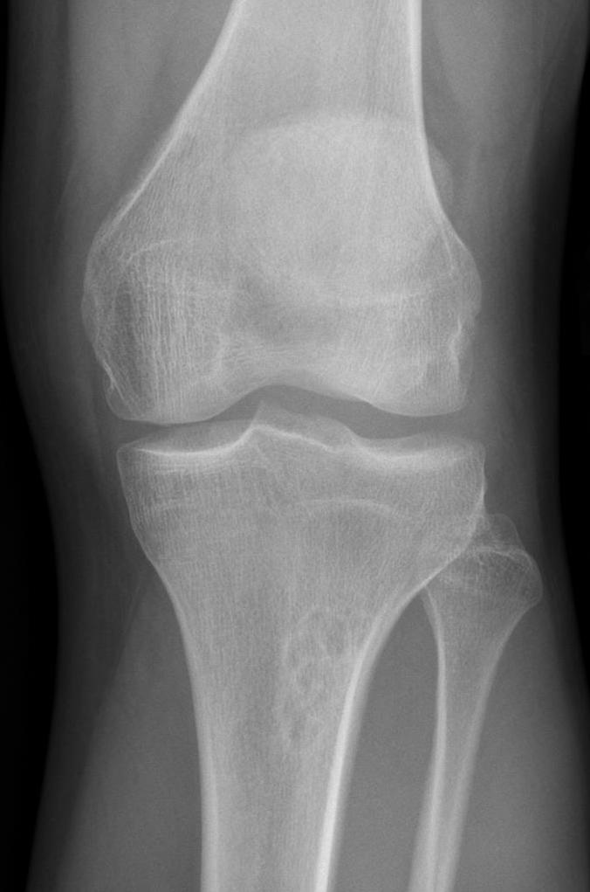

Ficha del catálogo
Fibroma no osificante
- Sistema
- Óseo
- Modalidad
- RX
- Región
- Rodilla
- Dificultad
- Básico
El fibroma no osificante es la lesión ósea benigna más frecuente del niño y del adolescente y constituye un hallazgo casual en la mayoría de los casos. Se localiza en la metáfisis de los huesos largos, sobre todo alrededor de la rodilla, y nace del hueso cortical. Es asintomático y desaparece de forma espontánea al terminar el crecimiento mediante relleno progresivo con hueso. Su interés docente reside en que representa el prototipo de lesión que no requiere biopsia ni seguimiento cuando la imagen es característica.
Técnica
Radiografía en dos proyecciones centrada en la metáfisis. La proyección tangencial a la cortical es la que mejor demuestra el origen cortical de la lesión.
Qué observar
- Lesión lítica excéntrica de asiento cortical en la metáfisis
- Borde esclerótico fino, festoneado y bien definido
- Aspecto multiloculado con septos internos
- Adelgazamiento y abombamiento suave de la cortical sin rotura
- Ausencia de reacción perióstica y de masa de partes blandas
- Progresión hacia la diáfisis y esclerosis creciente en los controles
Hallazgos
Lesión lítica metafisaria excéntrica, cortical, con margen esclerótico lobulado y sin rasgos agresivos.
Perlas
El aspecto radiográfico es tan característico que basta para el diagnóstico y no se necesitan estudios adicionales. Solo las lesiones muy grandes que ocupan buena parte del diámetro óseo justifican vigilancia por el riesgo de fractura patológica.
Diagnóstico diferencial
- Displasia fibrosa
- Matriz en vidrio deslustrado, situación central y lesión más extensa.
- Quiste óseo aneurismático
- Expansión marcada con niveles líquido líquido en resonancia.
- Osteomielitis subaguda localizada
- Dolor, halo de esclerosis con trayecto hacia la fisis y reacción perióstica.
Simuladores
- Irregularidad cortical distal del fémur en el adolescente
- Canal nutricio metafisario
- Superposición de partes blandas en proyecciones oblicuas
Por modalidad
- RX
- Diagnóstico definitivo cuando la imagen es típica
- RM
- Solo si hay dudas, muestra señal variable con borde de baja señal
- TC
- Precisa el adelgazamiento cortical en lesiones grandes
Protocolo
Dos proyecciones del segmento. No se recomiendan controles cuando la lesión es pequeña y con rasgos característicos.
Clasificación
Se distingue el defecto fibroso cortical, más pequeño y limitado a la cortical, del fibroma no osificante, que se extiende hacia la cavidad medular.
Errores frecuentes
- Solicitar biopsia ante una lesión de aspecto típico
- Generar alarma por un hallazgo casual sin trascendencia
- No advertir el riesgo de fractura en lesiones que ocupan gran parte del hueso

fibroma no osificante defecto fibroso cortical lesion benigna metafisis no tocar pediatrico hallazgo casual